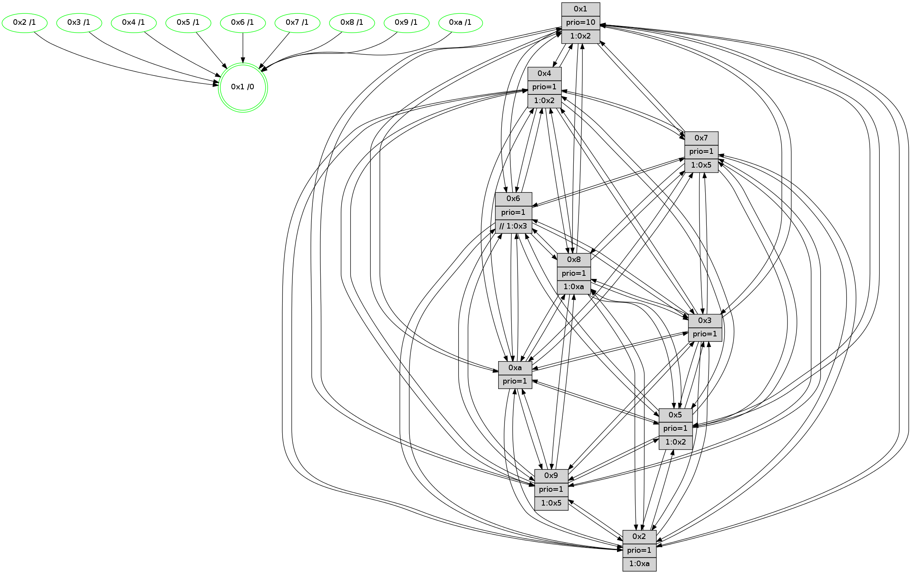

>> << IDX [start] -100 -25 -5 +0 +5 +25 +100 [1380.44591999]
 Previous packets
1375.018995 beacon08(faad) #0 coord=01,02,03,04,05,06,07,0a,09,08 cycle=688.0ms assoc 64 67 d1
1375.029942 [Hello(1): seq=786 sym=4,2,9,5,10,3,8,6,7 sysInfo=coloring-mode-on,ColoringModeRequestCalled stat=4:12,7,5,3/2:10,14,15,5/9:9,5,2,1/5:1,7,4,9/10:10,4,2,8/3:12,6,2,10/8:12,15,0,2/6:0,3,0,0/7:10,2,8,1]
1375.032582 [Hello(5): seq=877 sym=7,6,4,3,1,9,8,10,2 sysInfo=hasWarning stat=7:5,11,13,0/6:7,11,10,4/4:12,2,2,15/3:13,5,7,2/1:5,12,4,0/9:8,3,13,10/8:9,11,0,4/10:8,2,0,9/2:12,5,7,7]
1375.035623 [Color(10) seq=466 @0:0 prio=1]
1375.038779 [Hello(2): seq=873 sym=4,5,7,6,3,9,8,10,1 sysInfo=hasWarning stat=4:12,4,4,13/5:15,0,12,3/7:9,2,5,1/6:7,10,3,0/3:2,5,3,0/9:1,5,5,9/8:1,2,0,12/10:12,15,3,11/1:15,5,13,0]
1375.042558 [Color(2) seq=453 @0:0 prio=1 >1.@a]
1375.044027 [Hello(3): seq=877 sym=1,7,6,2,4,8,9,10,5 sysInfo=hasWarning stat=1:2,12,5,0/7:0,1,7,14/6:7,11,2,0/2:13,7,15,2/4:9,12,10,13/8:9,0,1,5/9:7,2,8,0/10:8,13,13,5/5:7,7,10,1]
1375.047827 [Color(3) seq=506 @0:0 prio=1]
1375.053441 [Color(6) seq=509 @0:0 prio=1 >>1.@2,1.@3,1.@4]
----------------------------------------------------------------------
1375.717135 beacon01(faad) #0 coord=01,02,03,04,05,06,07,0a,09,08 cycle=688.0ms assoc
-- color-indic=1 64 4e 04
1375.727117 beacon02(faad) #0 coord=01,02,03,04,05,06,07,0a,09,08 cycle=688.0ms assoc 64 dd 35
1375.737118 beacon03(faad) #0 coord=01,02,03,04,05,06,07,0a,09,08 cycle=688.0ms assoc 64 a7 78
1375.747117 beacon04(faad) #0 coord=01,02,03,04,05,06,07,0a,09,08 cycle=688.0ms assoc 64 d0 92
1375.757119 beacon05(faad) #0 coord=01,02,03,04,05,06,07,0a,09,08 cycle=688.0ms assoc 64 aa df
1375.767118 beacon06(faad) #0 coord=01,02,03,04,05,06,07,0a,09,08 cycle=688.0ms assoc 64 24 08
1375.777118 beacon07(faad) #0 coord=01,02,03,04,05,06,07,0a,09,08 cycle=688.0ms assoc 64 5e 45
1375.787123 beacon0a(faad) #0 coord=01,02,03,04,05,06,07,0a,09,08 cycle=688.0ms assoc 64 2f 4e
1375.797123 beacon09(faad) #0 coord=01,02,03,04,05,06,07,0a,09,08 cycle=688.0ms assoc 64 a1 99
1375.807125 beacon08(faad) #0 coord=01,02,03,04,05,06,07,0a,09,08 cycle=688.0ms assoc 64 db d4
1375.818349 [Hello(10): seq=810 sym=6,2,3,8,7,5,9,4,1 sysInfo=hasWarning stat=6:2,14,15,3/2:2,8,2,0/3:8,7,6,14/8:4,4,14,3/7:9,10,12,9/5:10,15,12,1/9:15,0,1,0/4:15,6,9,2/1:5,8,13,1]
1375.821069 [Color(1) seq=557 @0:0 prio=10 >1.@2,1.@3,1.@4,1.@5]
1375.823566 [Hello(4): seq=877 sym=5,8,6,2,3,9,7,10,1 sysInfo= stat=5:15,12,6,2/8:6,12,0,0/6:9,12,12,14/2:1,9,5,0/3:7,7,15,15/9:15,0,13,1/7:6,8,1,0/10:14,10,0,14/1:1,14,0,1]
1375.827872 [Hello(8): seq=821 sym=5,2,3,7,9,6,4,10,1 sysInfo=hasWarning stat=5:0,15,6,1/2:8,3,11,12/3:1,5,0,4/7:8,4,2,1/9:7,15,7,4/6:5,4,13,15/4:2,4,1,1/10:3,7,13,5/1:6,3,1,0]
1375.830672 [Color(5) seq=424 @0:0 prio=1]
1375.831956 [Color(4) seq=416 @0:0 prio=1 >10.@1,1.@2,1.@3,1.@5]
1375.837211 [Color(8) seq=476 @0:0 prio=1 >1.@a]
1375.838708 [Hello(7): seq=877 sym=2,3,5,6,4,8,9,10,1 sysInfo=hasWarning stat=2:11,11,3,3/3:4,1,7,3/5:2,0,10,3/6:14,11,4,11/4:12,7,4,1/8:0,1,1,0/9:15,6,8,1/10:9,15,14,7/1:11,7,14,0]
1375.842177 [Color(7) seq=405 @0:0 prio=1 >10.@1,1.@5,1.@6,1.@8]
----------------------------------------------------------------------
1376.505267 beacon01(faad) #0 coord=01,02,03,04,05,06,07,0a,09,08 cycle=688.0ms assoc
-- color-indic=1 64 7a 1c
1376.515250 beacon02(faad) #0 coord=01,02,03,04,05,06,07,0a,09,08 cycle=688.0ms assoc 64 e9 2d
1376.525249 beacon03(faad) #0 coord=01,02,03,04,05,06,07,0a,09,08 cycle=688.0ms assoc 64 93 60
1376.535250 beacon04(faad) #0 coord=01,02,03,04,05,06,07,0a,09,08 cycle=688.0ms assoc 64 e4 8a
1376.545250 beacon05(faad) #0 coord=01,02,03,04,05,06,07,0a,09,08 cycle=688.0ms assoc 64 9e c7
1376.555250 beacon06(faad) #0 coord=01,02,03,04,05,06,07,0a,09,08 cycle=688.0ms assoc 64 10 10
1376.565250 beacon07(faad) #0 coord=01,02,03,04,05,06,07,0a,09,08 cycle=688.0ms assoc 64 6a 5d
1376.575254 beacon0a(faad) #0 coord=01,02,03,04,05,06,07,0a,09,08 cycle=688.0ms assoc 64 1b 56
1376.595256 beacon08(faad) #0 coord=01,02,03,04,05,06,07,0a,09,08 cycle=688.0ms assoc 64 ef cc
1376.606492 [Hello(5): seq=878 sym=7,6,4,3,1,9,8,10,2 sysInfo=hasWarning stat=7:6,12,13,0/6:7,12,10,4/4:12,3,2,15/3:14,5,7,2/1:5,12,4,0/9:9,4,13,10/8:9,12,0,4/10:8,3,0,9/2:13,6,7,7]
1376.610445 [Hello(1): seq=787 sym=4,2,9,5,10,3,8,6,7 sysInfo=coloring-mode-on,ColoringModeRequestCalled stat=4:13,8,5,3/2:11,15,15,5/9:9,5,2,1/5:2,8,4,9/10:11,5,2,8/3:13,7,2,10/8:13,0,0,2/6:0,4,0,0/7:11,3,8,1]
1376.613029 [Hello(6): seq=878 sym=2,3,5,4,7,9,8,10,1 sysInfo=hasWarning stat=2:2,6,2,0/3:2,4,2,0/5:14,12,3,4/4:6,6,7,8/7:7,4,1,15/9:13,5,12,10/8:3,10,10,6/10:3,10,4,13/1:12,7,1,1]
1376.615876 [Color(6) seq=510 @0:0 prio=1 >>1.@2,1.@3,1.@4]
1376.618484 [Color(10) seq=467 @0:0 prio=1]
1376.621466 [Hello(2): seq=874 sym=4,5,7,6,3,9,8,10,1 sysInfo=hasWarning stat=4:13,5,4,13/5:0,1,12,3/7:10,3,5,1/6:7,11,3,0/3:3,5,3,0/9:1,5,5,9/8:2,3,0,12/10:12,15,3,11/1:0,6,13,0]
1376.623897 [Color(9) seq=437 @0:0 prio=1 >1.@5,1.@a]
1376.626476 [STC(1) #0.234 tree-change,inconsistent-stability,stable,to-color d=0]
1376.628536 [Hello(3): seq=878 sym=1,7,6,2,4,8,9,10,5 asym= sysInfo=hasWarning stat=1:3,13,5,0/7:1,2,7,14/6:7,12,2,0/2:13,7,15,2/4:10,13,10,13/8:10,1,1,5/9:7,2,8,0/10:9,13,13,5/5:8,8,10,1]
1376.631456 [Color(2) seq=454 @0:0 prio=1 >1.@a]
1376.636590 [Color(3) seq=507 @0:0 prio=1]
----------------------------------------------------------------------
1377.293399 beacon01(faad) #0 coord=01,02,03,04,05,06,07,0a,09,08 cycle=688.0ms assoc
-- color-indic=1 64 c6 19
1377.303382 beacon02(faad) #0 coord=01,02,03,04,05,06,07,0a,09,08 cycle=688.0ms assoc 64 55 28
1377.313381 beacon03(faad) #0 coord=01,02,03,04,05,06,07,0a,09,08 cycle=688.0ms assoc 64 2f 65
1377.323382 beacon04(faad) #0 coord=01,02,03,04,05,06,07,0a,09,08 cycle=688.0ms assoc 64 58 8f
1377.333381 beacon05(faad) #0 coord=01,02,03,04,05,06,07,0a,09,08 cycle=688.0ms assoc 64 22 c2
1377.343383 beacon06(faad) #0 coord=01,02,03,04,05,06,07,0a,09,08 cycle=688.0ms assoc 64 ac 15
1377.353382 beacon07(faad) #0 coord=01,02,03,04,05,06,07,0a,09,08 cycle=688.0ms assoc 64 d6 58
1377.363387 beacon0a(faad) #0 coord=01,02,03,04,05,06,07,0a,09,08 cycle=688.0ms assoc 64 a7 53
1377.383388 beacon08(faad) #0 coord=01,02,03,04,05,06,07,0a,09,08 cycle=688.0ms assoc 64 53 c9
1377.396294 [STC(6)->1 #0.234 tree-change,inconsistent-stability,stable,to-color d=1]
1377.398061 [STC(5)->1 #0.234 tree-change,inconsistent-stability,stable,to-color d=1]
1377.399342 [Color(1) seq=558 @0:0 prio=10 >1.@2,1.@3,1.@4,1.@5]
1377.401841 [Color(5) seq=425 @0:0 prio=1 >10.@1,1.@2,1.@3,1.@4]
1377.404412 [Hello(10): seq=811 sym=6,2,3,8,7,5,9,4,1 sysInfo=hasWarning stat=6:2,14,15,3/2:3,9,2,0/3:9,8,6,14/8:5,5,14,3/7:10,11,12,9/5:11,0,12,1/9:15,0,1,0/4:0,7,9,2/1:5,9,14,1]
1377.407779 [Hello(7): seq=878 sym=2,3,5,6,4,8,9,10,1 sysInfo=hasWarning stat=2:12,12,3,3/3:5,2,7,3/5:3,0,10,3/6:15,12,4,11/4:12,7,4,1/8:0,1,1,0/9:15,6,8,1/10:10,0,14,7/1:12,8,15,0]
1377.411219 [STC(8)->1 #0.234 tree-change,inconsistent-stability,stable,to-color d=1]
1377.412516 [STC(4)->1 #0.234 tree-change,inconsistent-stability,stable,to-color d=1]
1377.414133 [Color(8) seq=477 @0:0 prio=1 >1.@a]
1377.415509 [STC(10)->1 #0.234 tree-change,inconsistent-stability,stable,to-color d=1]
1377.417243 [Hello(9): seq=822 sym=2,5,3,4,7,6,8,10,1 sysInfo=hasWarning stat=2:2,5,13,10/5:14,5,0,8/3:7,10,8,3/4:10,2,2,2/7:9,9,7,4/6:4,12,13,13/8:7,8,2,5/10:0,2,0,0/1:10,9,3,1]
1377.420777 [STC(7)->1 #0.234 tree-change,inconsistent-stability,stable,to-color d=1]
1377.422300 [STC(9)->1 #0.234 tree-change,inconsistent-stability,stable,to-color d=1]
1377.426723 [Color(7) seq=406 @0:0 prio=1 >10.@1,1.@5,1.@6,1.@8]
1377.431645 [Color(4) seq=417 @0:0 prio=1 >10.@1,1.@2,1.@3,1.@5]
----------------------------------------------------------------------
1378.081530 beacon01(faad) #0 coord=01,02,03,04,05,06,07,0a,09,08 cycle=688.0ms assoc
-- color-indic=1 64 02 17
1378.091513 beacon02(faad) #0 coord=01,02,03,04,05,06,07,0a,09,08 cycle=688.0ms assoc 64 91 26
1378.101512 beacon03(faad) #0 coord=01,02,03,04,05,06,07,0a,09,08 cycle=688.0ms assoc 64 eb 6b
1378.111514 beacon04(faad) #0 coord=01,02,03,04,05,06,07,0a,09,08 cycle=688.0ms assoc 64 9c 81
1378.121512 beacon05(faad) #0 coord=01,02,03,04,05,06,07,0a,09,08 cycle=688.0ms assoc 64 e6 cc
1378.131513 beacon06(faad) #0 coord=01,02,03,04,05,06,07,0a,09,08 cycle=688.0ms assoc 64 68 1b
1378.141514 beacon07(faad) #0 coord=01,02,03,04,05,06,07,0a,09,08 cycle=688.0ms assoc 64 12 56
1378.151517 beacon0a(faad) #0 coord=01,02,03,04,05,06,07,0a,09,08 cycle=688.0ms assoc 64 63 5d
1378.171517 beacon08(faad) #0 coord=01,02,03,04,05,06,07,0a,09,08 cycle=688.0ms assoc 64 97 c7
1378.183379 [Hello(5): seq=879 sym=7,6,4,3,1,9,8,10,2 sysInfo=hasWarning stat=7:7,13,14,0/6:8,13,11,4/4:13,4,3,15/3:15,6,7,2/1:6,13,5,0/9:10,4,14,10/8:9,13,1,4/10:8,4,1,9/2:14,7,7,7]
1378.186988 [Color(10) seq=468 @0:0 prio=1]
1378.188591 [Hello(3): seq=879 sym=1,7,6,2,4,8,9,10,5 sysInfo=hasWarning stat=1:3,14,5,0/7:2,3,8,14/6:7,12,3,0/2:13,7,15,2/4:10,14,11,13/8:10,2,2,5/9:8,2,9,0/10:10,13,14,5/5:9,9,11,1]
1378.191409 [Color(3) seq=508 @0:0 prio=1]
1378.192634 [Color(9) seq=438 @0:0 prio=1 >1.@5,1.@a]
1378.197096 [Hello(1): seq=788 sym=4,2,9,5,10,3,8,6,7 sysInfo=coloring-mode-on,ColoringModeRequestCalled stat=4:13,9,6,3/2:11,0,15,5/9:10,5,3,1/5:2,9,4,9/10:12,5,3,8/3:14,8,2,10/8:13,1,1,2/6:0,4,1,0/7:12,4,9,1]
1378.206762 [Hello(6): seq=879 sym=2,3,5,4,7,9,8,10,1 sysInfo=hasWarning stat=2:3,7,2,0/3:3,5,2,0/5:15,13,4,4/4:6,7,8,8/7:8,5,2,15/9:14,5,13,10/8:3,11,11,6/10:4,11,5,13/1:12,8,2,1]
1378.211199 [Color(6) seq=511 @0:0 prio=1 >>1.@2,1.@3,1.@4]
1378.215735 [Hello(2): seq=875 sym=4,5,7,6,3,9,8,10,1 sysInfo=hasWarning stat=4:13,6,5,13/5:1,2,13,3/7:11,4,6,1/6:7,11,4,0/3:3,6,3,0/9:2,6,6,9/8:2,4,1,12/10:12,15,4,11/1:0,7,13,0]
1378.219199 [Color(2) seq=455 @0:0 prio=1 >1.@a]
----------------------------------------------------------------------
1378.869660 beacon01(faad) #0 coord=01,02,03,04,05,06,07,0a,09,08 cycle=688.0ms assoc
-- color-indic=1 64 be 12
1378.879642 beacon02(faad) #0 coord=01,02,03,04,05,06,07,0a,09,08 cycle=688.0ms assoc 64 2d 23
1378.889644 beacon03(faad) #0 coord=01,02,03,04,05,06,07,0a,09,08 cycle=688.0ms assoc 64 57 6e
1378.899643 beacon04(faad) #0 coord=01,02,03,04,05,06,07,0a,09,08 cycle=688.0ms assoc 64 20 84
1378.909642 beacon05(faad) #0 coord=01,02,03,04,05,06,07,0a,09,08 cycle=688.0ms assoc 64 5a c9
1378.919643 beacon06(faad) #0 coord=01,02,03,04,05,06,07,0a,09,08 cycle=688.0ms assoc 64 d4 1e
1378.929643 beacon07(faad) #0 coord=01,02,03,04,05,06,07,0a,09,08 cycle=688.0ms assoc 64 ae 53
1378.939649 beacon0a(faad) #0 coord=01,02,03,04,05,06,07,0a,09,08 cycle=688.0ms assoc 64 df 58
1378.959647 beacon08(faad) #0 coord=01,02,03,04,05,06,07,0a,09,08 cycle=688.0ms assoc 64 2b c2
1378.971520 [Hello(9): seq=823 sym=2,5,3,4,7,6,8,10,1 sysInfo=hasWarning stat=2:3,6,13,10/5:15,5,0,8/3:7,10,8,3/4:10,3,2,2/7:9,10,7,4/6:5,13,13,13/8:7,8,2,5/10:0,2,0,0/1:11,9,3,1]
1378.974243 [Color(5) seq=426 @0:0 prio=1 >1.@2,1.@3,1.@4,1.@6]
1378.976121 [Hello(7): seq=879 sym=2,3,5,6,4,8,9,10,1 sysInfo=hasWarning stat=2:13,13,3,3/3:6,3,7,3/5:4,0,11,3/6:0,13,5,11/4:12,8,4,1/8:0,1,1,0/9:15,7,8,1/10:10,1,14,7/1:13,8,15,0]
1378.978829 [Hello(10): seq=812 sym=6,2,3,8,7,5,9,4,1 sysInfo=hasWarning stat=6:3,15,15,3/2:4,10,2,0/3:10,9,6,14/8:5,5,14,3/7:10,12,13,9/5:12,0,12,1/9:0,1,2,0/4:0,8,9,2/1:6,9,14,1]
1378.983094 [Hello(8): seq=823 sym=5,2,3,7,9,6,4,10,1 sysInfo=hasWarning stat=5:2,15,7,1/2:10,5,11,12/3:3,7,0,4/7:9,6,3,1/9:8,0,8,4/6:7,6,14,15/4:2,5,1,1/10:4,9,14,5/1:8,4,2,0]
1378.986554 [Color(8) seq=478 @0:0 prio=1 >1.@a]
1378.989814 [Hello(4): seq=879 sym=5,8,6,2,3,9,7,10,1 sysInfo= stat=5:1,12,7,2/8:6,13,0,0/6:11,14,13,14/2:3,11,5,0/3:9,9,15,15/9:0,1,13,1/7:7,9,1,0/10:14,12,0,14/1:3,15,1,1]
1378.993275 [Color(4) seq=418 @0:0 prio=1 >1.@2,1.@3,1.@5,1.@a]
1379.001549 [Color(7) seq=407 @0:0 prio=1 >1.@5,1.@6,1.@8,1.@a]
----------------------------------------------------------------------
1379.657789 beacon01(faad) #0 coord=01,02,03,04,05,06,07,0a,09,08 cycle=688.0ms assoc
-- color-indic=1 64 6a 27
1379.667772 beacon02(faad) #0 coord=01,02,03,04,05,06,07,0a,09,08 cycle=688.0ms assoc 64 f9 16
1379.677772 beacon03(faad) #0 coord=01,02,03,04,05,06,07,0a,09,08 cycle=688.0ms assoc 64 83 5b
1379.687773 beacon04(faad) #0 coord=01,02,03,04,05,06,07,0a,09,08 cycle=688.0ms assoc 64 f4 b1
1379.697774 beacon05(faad) #0 coord=01,02,03,04,05,06,07,0a,09,08 cycle=688.0ms assoc 64 8e fc
1379.707773 beacon06(faad) #0 coord=01,02,03,04,05,06,07,0a,09,08 cycle=688.0ms assoc 64 00 2b
1379.717773 beacon07(faad) #0 coord=01,02,03,04,05,06,07,0a,09,08 cycle=688.0ms assoc 64 7a 66
1379.727777 beacon0a(faad) #0 coord=01,02,03,04,05,06,07,0a,09,08 cycle=688.0ms assoc 64 0b 6d
1379.747780 beacon08(faad) #0 coord=01,02,03,04,05,06,07,0a,09,08 cycle=688.0ms assoc 64 ff f7
1379.760303 [Hello(1): seq=789 sym=4,2,9,5,10,3,8,6,7 sysInfo=coloring-mode-on,ColoringModeRequestCalled stat=4:14,10,6,3/2:12,1,15,5/9:11,5,3,1/5:2,9,4,9/10:13,5,3,8/3:14,8,2,10/8:14,2,1,2/6:1,5,1,0/7:13,5,9,1]
1379.763348 [Hello(3): seq=880 sym=1,7,6,2,4,8,9,10,5 sysInfo=hasWarning stat=1:4,15,5,0/7:3,4,8,14/6:8,13,3,0/2:14,8,15,2/4:11,15,11,13/8:11,3,2,5/9:9,3,9,0/10:11,13,14,5/5:10,9,11,1]
1379.765979 [Hello(5): seq=880 sym=7,6,4,3,1,9,8,10,2 sysInfo=hasWarning stat=7:8,14,14,0/6:9,14,11,4/4:14,5,3,15/3:0,7,7,2/1:7,13,5,0/9:11,5,14,10/8:10,14,1,4/10:9,5,1,9/2:15,8,7,7]
1379.769231 [Color(10) seq=469 @0:0 prio=1]
1379.771101 [Color(3) seq=509 @0:0 prio=1]
1379.773225 [Color(9) seq=439 @0:0 prio=1 >1.@5,1.@a]
1379.779287 [Hello(2): seq=876 sym=4,5,7,6,3,9,8,10,1 asym= sysInfo=hasWarning stat=4:14,7,5,13/5:2,2,13,3/7:12,5,6,1/6:7,11,4,0/3:3,6,3,0/9:3,6,6,9/8:3,5,1,12/10:13,15,4,11/1:0,8,13,0]
1379.782738 [Color(2) seq=456 @0:0 prio=1 >1.@a]
1379.790472 [Hello(6): seq=880 sym=2,3,5,4,7,9,8,10,1 sysInfo=hasWarning stat=2:4,8,2,0/3:3,5,2,0/5:0,14,4,4/4:7,8,8,8/7:9,6,2,15/9:15,5,13,10/8:4,12,11,6/10:5,11,5,13/1:12,8,2,1]
1379.793632 [Color(6) seq=512 @0:0 prio=1 >>1.@3,1.@4,1.@5]